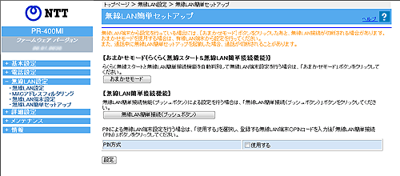
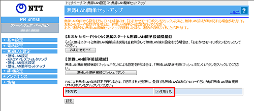
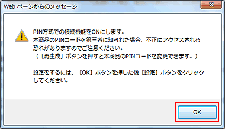
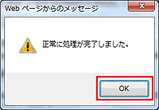
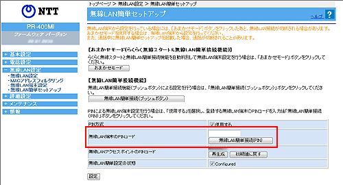
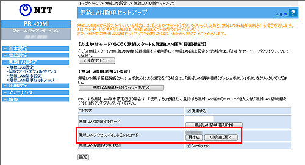
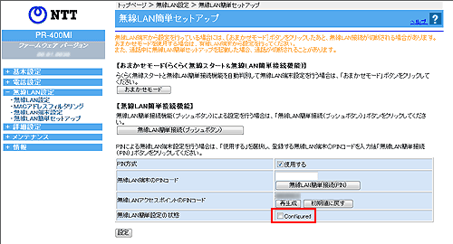

| 本商品の、「おまかせモード」や「無線LAN 簡単接続機能」を使用して、無線LAN端末との 無線LAN設定をします。 本画面は、本商品に専用無線LANカード（SC-40NE/SC-40NE「2」）が装着されているときに表示されます。 無線LAN端末から設定を行っている場合には、［おまかせモード］ボタンをクリックしたあと、無線LAN接続が切断される場合があります。 おまかせモードを使用する場合は、有線LAN端末から設定を行ってください。また、通話中に無線LAN簡単セットアップを起動した場合、通話が切断されることがあります。 |
| ※「Web設定」画面に表示されているボタンについての説明は こちら |
|  |
| らくらく無線スタートと無線LAN簡単接続機能を自動判別して無線LAN端末設定を行う場合は、［おまかせモード］をクリックします。 | |
|
＜お知らせ＞
|
| 無線LAN簡単接続（プッシュボタン）による無線LAN端末設定を行う場合は、［無線LAN簡単接続（プッシュボタン）］をクリックします。 | |
＜お知らせ＞
- 無線LAN端末の検索を延長する場合は「設定時間（WalkTime）延長」ボタンをクリックしてください。無線LAN端末の検索が一定時間延長されます。
- 「設定時間（WalkTime）延長」ボタンは間隔をあけて押してください。
- 接続する無線LAN端末がない状態で無線LAN簡単接続を行った場合、2分間で自動的にキャンセルされます。
| PIN方式による無線LAN端末設定を行う場合にチェックします。 | |||||||||
| 「PIN方式」で、 「使用する」にチェックした場合 |
|||||||||
|
|||||||||
| 「PIN方式」で、 「使用する」にチェックした場合 無線LAN端末の無線LAN設定を本商品に設定することを許可する場合は、 「Configured」のチェックをはずして無効とします。 ※本商品の無線LAN設定が変更になるため、設定済みの他の無線LAN端末から 接続できなくなる場合があります。 |
|||||||||
＜お知らせ＞
- 本商品の無線LAN設定が変更になり、設定済みの他の無線LAN端末から接続できなくなる場合があります。
- 「無線LAN簡単接続の状態」は、下記の場合、自動的に「Configured」に設定されます。
・本商品の無線LAN設定が変更された場合
・「無線LAN簡単接続」を用いて、無線LAN端末の設定を変更した場合
・本商品の設定を初期化した場合
- 「無線LAN簡単接続の状態」の「Configured」の設定を外した場合、予期せず無線LAN設定が上書きされる場合があります。セキュリティの観点から、「Configured」に設定をすることをお勧めします。
- SSID-1のMACアドレスフィルタリングを「使用する」に設定しているときは、「MACアドレスフィルタリング」で無線LAN端末のMACアドレスをエントリに設定していないと接続することができません。
| ■本商品の無線LAN設定を無線LAN端末に設定する | ||
| ＜無線LAN端末のPINコードを本商品に入力する場合＞ | ||
| 1. | 「PIN方式」の「使用する」にチェックする | |
|  | ||
| 2. | ［OK］をクリックする | |
|  | ||
| 3. | ［設定］をクリックする | |
| 4. | ［OK］をクリックする | |
|  | ||
| 5. | 「無線LAN端末のPINコード」に無線LAN端末のPINコードを入力し、［無線LAN簡単接続（PIN）］をクリックする |
|
|  | ||
| 6. | 無線LAN端末側の無線LAN簡単接続機能のPIN方式を起動する （詳細は無線LAN端末の取扱説明書などを参照してください。） |
|
| ＜本商品のPINコードを無線LAN端末に入力する場合＞ | ||
| 1. | 「PIN方式」の「使用する」にチェックする | |
| 2. | ［OK］をクリックする | |
| 3. | ［設定］をクリックする | |
| 4. | ［OK］をクリックする | |
| 5. | 無線LAN端末側で、「無線LANアクセスポイントのPINコード」に記載してある本商品のPINコードを入力し、無線LAN簡単接続機能のPIN方式を起動する （詳細は無線LAN端末の取扱説明書などを参照してください。） |
|
|  | ||
|
|
||
| ■無線LAN端末の無線LAN設定を本商品に設定する | ||
| ＜本商品のPINコードを無線LAN端末に入力する場合＞ | ||
| 1. | 「PIN方式」の「使用する」にチェックする | |
| 2. | ［OK］をクリックする | |
| 3. | ［設定］をクリックする | |
| 4. | ［OK］をクリックする | |
| 5. | 「無線LAN簡単接続の状態」の「Configured」のチェックを外し、［設定］をクリックする | |
|  | ||
| 6. | ［OK］をクリックする | |
| 7. | 無線LAN端末側で、「無線LANアクセスポイントのPINコード」に記載してある本商品のPINコードを入力し、無線LAN簡単接続機能のPIN方式を起動する （詳細は無線LAN端末の取扱説明書などを参照してください。） |
|
|
||